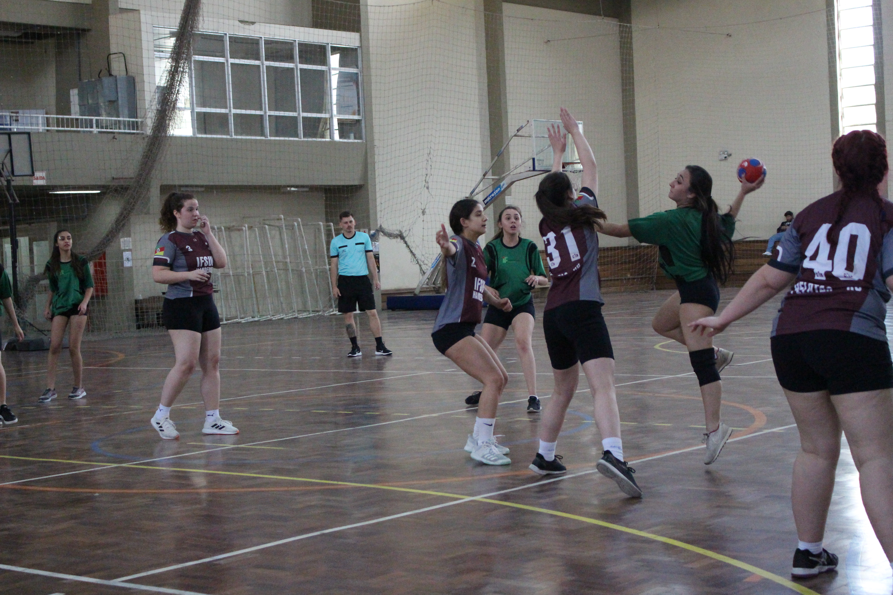
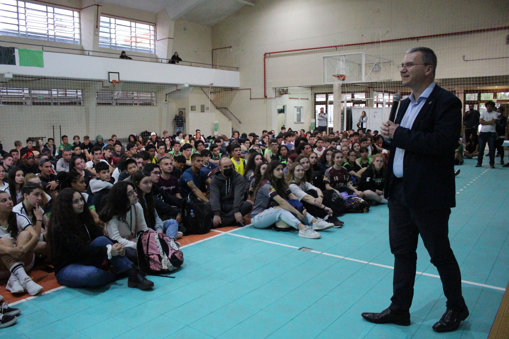
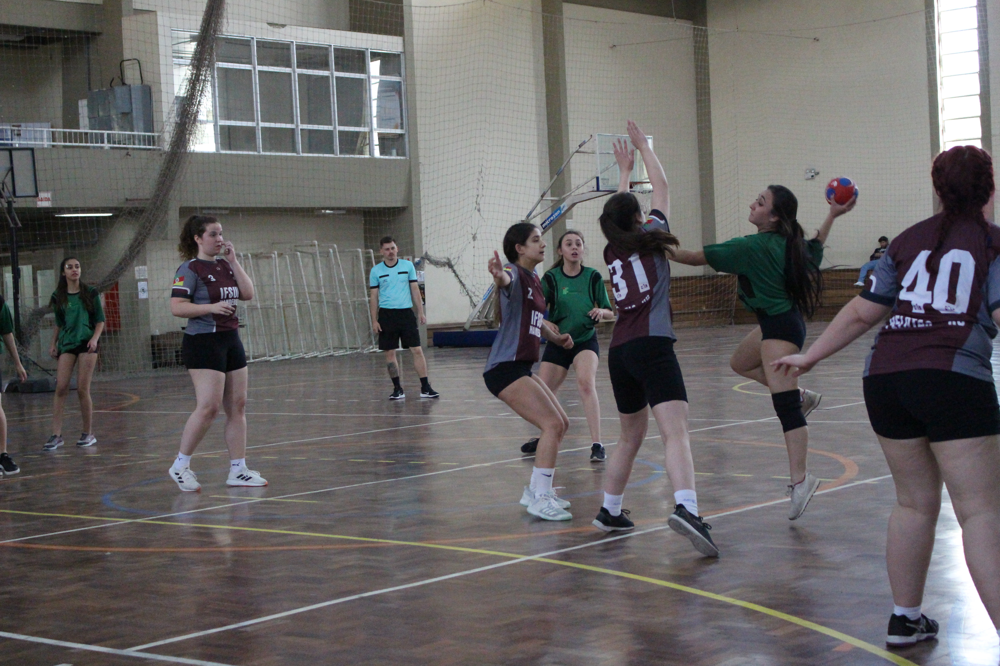
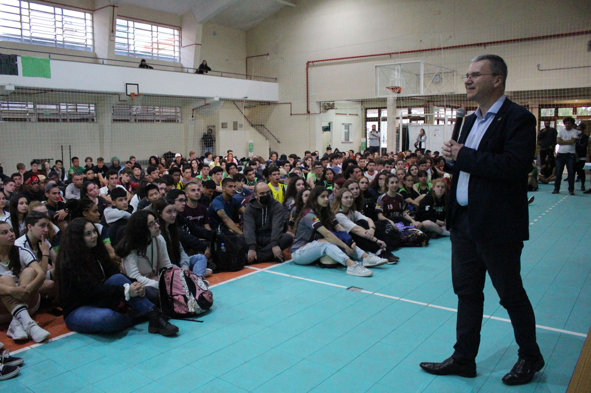

Fotos por Greice Gomes
Escrito por Greice Gomes | Coordenadoria de Comunicación Social
Traducido al español por Natalie Fernández
Martes, 08 de Noviembre de 2022, 17:11
La animación de las multitudes ya lo indicaba: era el día de la final de los Juegos Intercámpus del IFSul. Después de dos años sin llevarse a cabo los Juegos debido a la pandemia, fue el momento para que los atletas de todos los campus de la institución experimentaran la participación en la mayor competición deportiva del instituto. La final de los Juegos tuvo lugar el viernes, en Pelotas, y contó con la participación de unos 300 estudiantes; sumando las etapas anteriores, fueron más de 850 participantes durante todo el evento.
Además de marcar este momento histórico de los Juegos, fue la primera vez que estudiantes de los 14 campus del instituto participaron en el evento. Los juegos se disputaron en las disciplinas de atletismo, futsal, balonmano, baloncesto, voleibol, voleibol de playa, ajedrez y tenis de mesa.
Antes de la final, se llevaron a cabo dos etapas regionales de la competición, con partidos entre los campus de la región centro-norte del estado, con sede en el campus Sapucaia do Sul, y partidos entre los campus de la región sur, con sede en el campus Pelotas. La final fue disputada entre los ganadores de las etapas regionales. Consulta los resultados al final del artículo.
Entusiasmo marca la retomada exitosa e histórica de los juegos.
Incluso con todos los desafíos para retomar la realización de los Juegos, el resultado fue un verdadero regalo para aquellos que esperaban con ansias el regreso de la competencia. Según el organizador del evento y profesor de Educación Física del campus Pelotas, Vinícius Costa, fue desafiante organizar la logística de la competición, especialmente porque no se consideraron alojamientos, aún debido a la pandemia.
"¡Afortunadamente funcionó bien! Era un retorno importante, que tenía que ocurrir después de más de dos años sin competición deportiva en el IFSul. ¡Valió la pena! Creo que los estudiantes disfrutaron este regreso, según lo informado por la mayoría de los profesores de Educación Física", evalúa el docente, destacando que se observaron algunas dificultades técnicas en los juegos, causadas por más de dos años de interrupción y por el reciente regreso a los entrenamientos, "pero ampliamente superadas por la voluntad y disposición de todos".
Según el rector del IFSul, Flávio Nunes, ver el entusiasmo de las hinchadas y la energía de los estudiantes a lo largo de los juegos fue el punto culminante del regreso de la competencia después de dos años sin el evento. "Es genial ver el entusiasmo de los atletas entrenando y perfeccionándose para la competición. Nuestros juegos van al encuentro de la propia misión institucional del IFSul de ofrecer una formación integral a los estudiantes, desarrollando una serie de habilidades muy importantes junto con los conocimientos técnicos adquiridos", destaca el dirigente.
Oportunidade para promover la salud y conquistar nuevas amistades.
Participando por primera vez en los Juegos Intercámpus, la estudiante Aline Vargas, del campus Venâncio Aires, describió la experiencia como increíble. La atleta de 16 años, campeona en voleibol de cancha, cuenta que se sintió muy feliz con la oportunidad de participar. "Cuando el profesor presentó la posibilidad de competir en los juegos, ya estaba soñando con eso", dice la estudiante, agregando que los entrenamientos comenzaron a principios de año.
Atleta de baloncesto, el estudiante Raul Lize Teixeira, del campus Charqueadas, dice que fue a los juegos muy motivado y con grandes expectativas. Haber competido y ganado la final, según él, fue una experiencia muy enriquecedora. Pero más allá de la competencia, Raul, de 17 años y estudiante de informática, destaca que los juegos son un gran estímulo para que los estudiantes cuiden su salud y amplíen sus lazos de amistad. "Es genial tener la oportunidad de conocer a otras personas. Vamos a los juegos con personas de otros campus y todos nos convertimos en amigos", comenta el estudiante.
Participando en tres pruebas de atletismo, el estudiante de electrónica Derik Dias, del campus Pelotas, también fue novato en los Juegos Intercámpus. Y la primera experiencia en la competición fue con excelentes resultados: el joven atleta de 17 años se llevó el oro en los 400 metros y en el relevo 4x100 metros. "Fue genial participar en los Juegos, no todas las escuelas tienen esto", destaca Derik, diciendo que, con los resultados obtenidos, pretende enfocarse aún más en los entrenamientos.
Consulta los resultados de la competición:
Voleibol de cancha
Femenino - Campeón: campus Venâncio Aires / Subcampeón: campus Pelotas
Masculino - Campeón: campus Pelotas / Subcampeón: campus Venâncio Aires
Voleibol de pareja
Masculino - Campeón: campus Venâncio Aires / Subcampeón: campus Pelotas
Femenino - Campeón: campus Venâncio Aires / Subcampeón: campus Pelotas
Baloncesto
Femenino - Campeón: campus Pelotas / Subcampeón: campus Sapucaia do Sul
Masculino - Campeón: campus Charqueadas / Subcampeón: campus Pelotas
Futsal
Masculino - Campeón: campus Pelotas-Visconde da Graça / Subcampeón: campus Lajeado
Femenino - Campeón: campus Pelotas-Visconde da Graça / Subcampeón: campus Sapucaia do Sul
Balonmano
Femenino - Campeón: campus Pelotas / Subcampeón: campus Sapucaia do Sul
Masculino - Campeón: campus Pelotas / Subcampeón: campus Sapiranga
Ténis de mesa
Masculino - Campeón: Eliézer Venturini (Bagé) / Subcampeón: Leonardo Kauê de Lima (Sapiranga)
Femenino - Campeona: Alice Bohn Rosa (Sapucaia) / Subcampeona: Camile Silveira de Castro (Gravataí)
Equipos masculinos - Campeones: campus Bagé / Subcampeones: campus Sapiranga
Equipos femeninos - Campeonas: campus Sapucaia do Sul / Subcampeonas: campus Gravataí
Ajedrez
Masculino - Campeón: Gabriel Eduardo G. Ignacio (Novo Hamburgo) / Subcampeón: Augusto Samuel P. Soares (Santana do Livramento)
Femenino - Campeona: Laura da Rosa Leal (Pelotas) / Subcampeona: Antonella de Araújo B. Rosinha (Pelotas)
Atletísmo
100m
Femenino - Campeona: Marina Valente Zehetmeyer (Pelotas) / Subcampeona: Jaine da Rosa Soares (Bagé)
Masculino - Campeón: Miguel Ritter (Lajeado) / Subcampeón: Mateus Reis Heinen (Venâncio Aires)
200m
Masculino - Campeón: Mateus Reis Heinen (Venâncio Aires) / Subcampeón: Dérik Dias Urguim (Pelotas)
Femenino - Campeona: Manuella Pereira Domingues (Pelotas) / Subcampeona: Luiza Cardoso Rodrigues (Pelotas)
400m
Femenino - Campeona: Manuella Pereira Domingues (Pelotas) / Subcampeona: Nicole Silveira Pinto (Pelotas)
Masculino - Campeón: Dérik Dias Urguim (Pelotas) / Subcampeón: Guilherme Henrique Schabarum da Costa (Novo Hamburgo)
800m
Masculino - Campeón: Luan da Silva (Lajeado) / Subcampeón: Gustavo Davies dos Santos (Bagé)
Femenino - Campeona: Alissa Gadêa Dos Santos (Charqueadas) / Subcampeona: Nicole Silveira Pinto (Pelotas)
1500m
Femenino - Campeona: Alissa Gadea dos Santos (Charqueadas) / Subcampeona: Sarah Lemes da Silva (Sapucaia do Sul)
Masculino - Campeón: Luan da Silva (Lajeado) / Subcampeón: Abiezer Alves (Gravataí)
3000m
Femenino - Campeona: Juliane Santiago (Lajeado) / Subcampeona: Asenate de Melo Protti (Pelotas)
5000m
Masculino - Campeón: Luan da Silva (Lajeado) / Subcampeón: Leonardo Lucas da Silva Mendes (Gravataí)
Salto de altura
Femenino - Campeona: Paola Zanatta (Lajeado) / Subcampeona: Manuella Jara Castro Pereira (Pelotas)
Masculino - Campeón: Otávio Nunes Dias (Pelotas) / Subcampeón: Bernardo Backendorf (Lajeado)
Salto de longitud
Masculino - Campeón: Alan Knapp (Lajeado) / Subcampeón: Guilherme Henrique Schabarum da Costa (Novo Hamburgo)
Femenino - Campeona: Jaine da Rosa Soares (Bagé) / Subcampeona: Marina Valente Zehetmeyer (Pelotas)